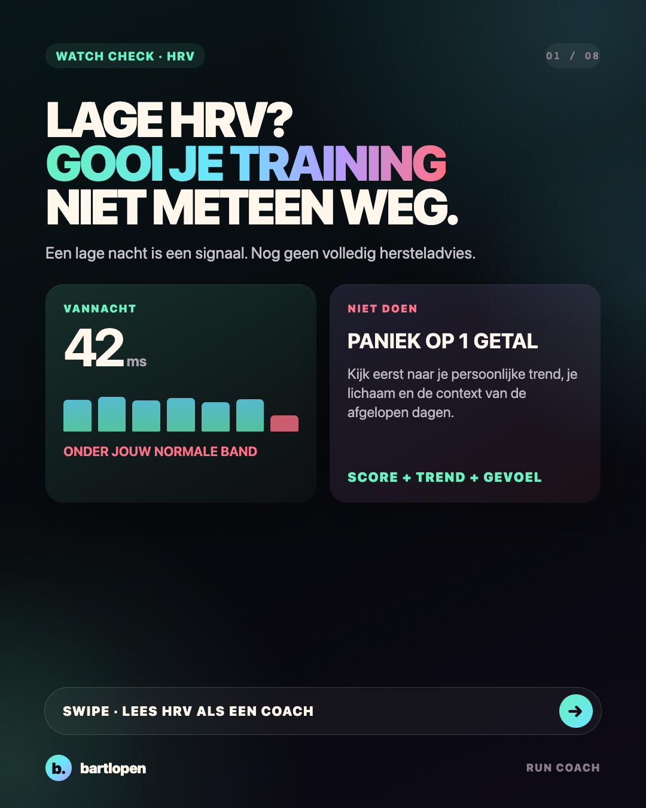
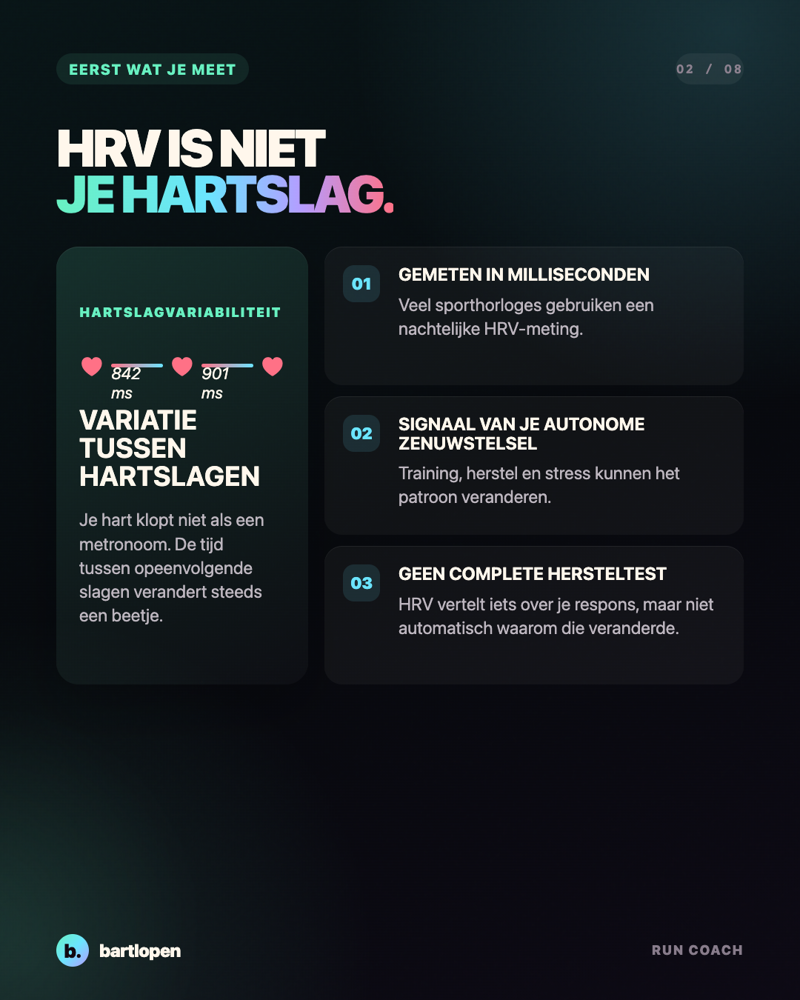
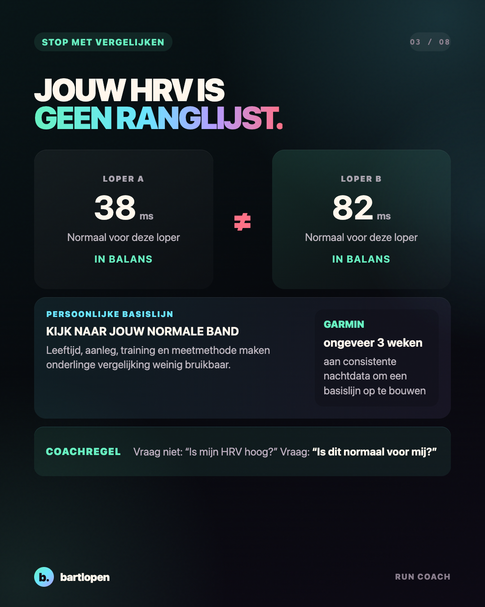
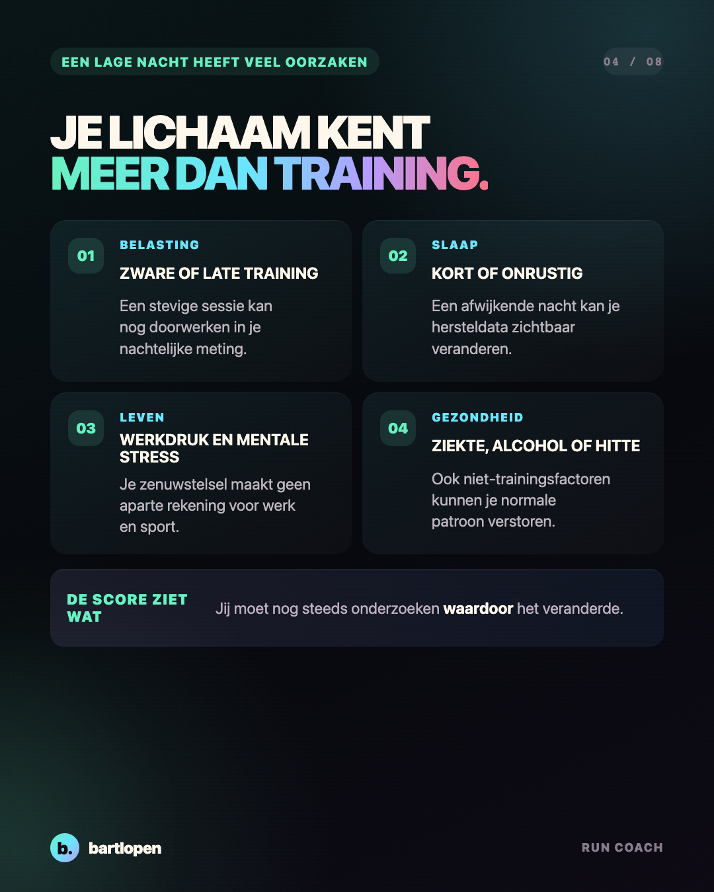
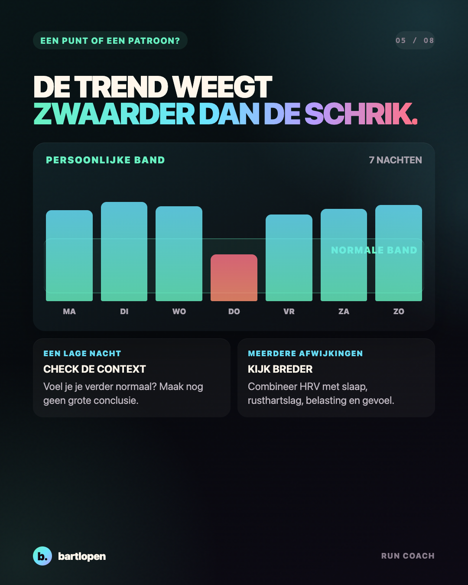
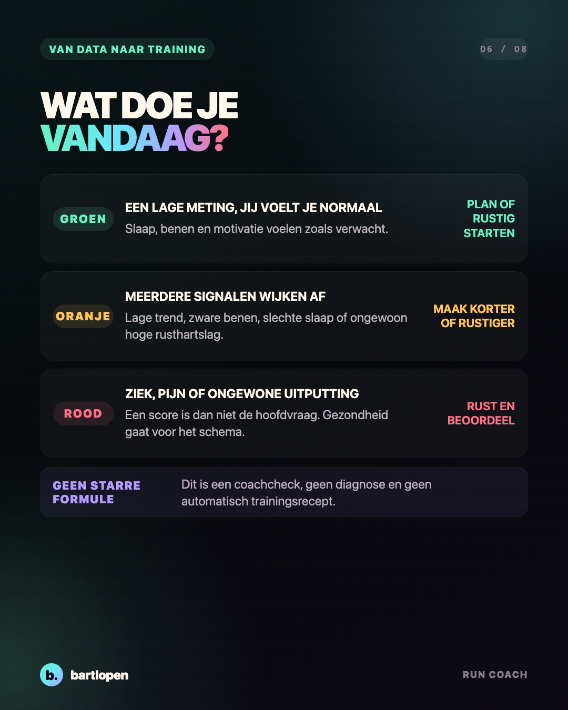
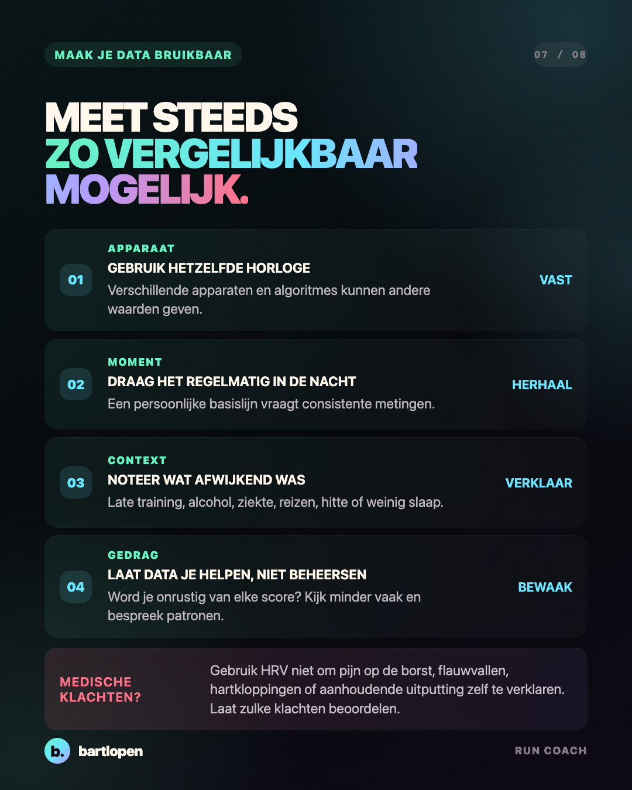
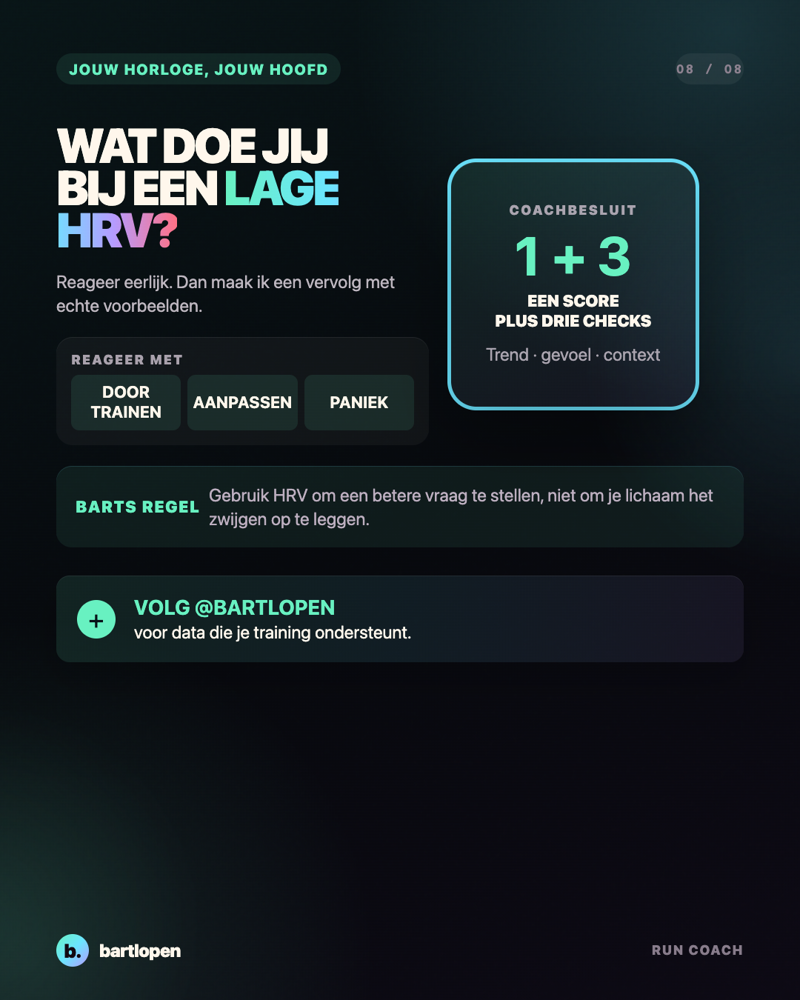

SLIDE 01 ↗Lage HRV?
Gooi je training niet weg.
Acht praktische slides om een lage HRV te combineren met je persoonlijke trend, gevoel en trainingscontext.

SLIDE 02 ↗
SLIDE 03 ↗
SLIDE 04 ↗
SLIDE 05 ↗
SLIDE 06 ↗
SLIDE 07 ↗
SLIDE 08 ↗Caption
LAGE HRV? GOOI JE TRAINING NIET METEEN WEG. ⌚️ Een lage nacht betekent niet automatisch dat je moet rusten. HRV wordt pas echt bruikbaar als je hem vergelijkt met jouw normale patroon en combineert met wat je lichaam vertelt. Mijn coachcheck: ✅ een lage meting, maar normale slaap en benen? Kijk eerst naar de context ✅ meerdere afwijkende nachten en zware benen? Maak de training korter of rustiger ✅ ziek, pijn of ongewoon uitgeput? Gezondheid gaat voor je schema ✅ vergelijk nooit jouw HRV met die van een andere loper HRV is een signaal. Geen diagnose, geen wedstrijd en geen baas van je trainingsplan. Wat doe jij bij een lage HRV: DOORTRAINEN, AANPASSEN of PANIEK? 👇 Bewaar deze coachcheck voor je volgende rode ochtend. #hardlopen #hrv #garmin #hardlooptips #trainingreadiness #runningwatch #herstel #runcoach #bartlopen
Onderbouwing: een systematische review en meta-analyse naar HRV-gestuurde duurtraining, een systematische review naar autonome hartregulatie en trainingsstatus, een methodologische review naar HRV-gestuurde training en de uitleg van Garmin over HRV Status en de persoonlijke basislijn. De beslisregels zijn coachvoorbeelden en geen medisch advies.